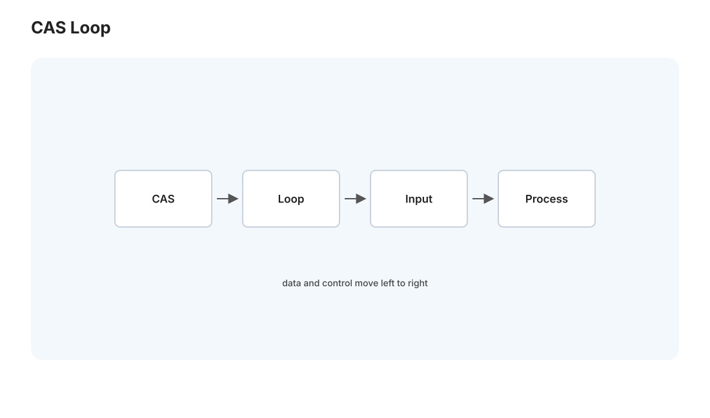
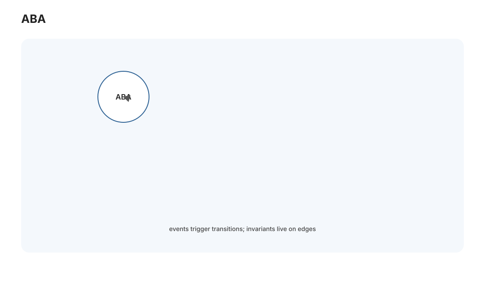
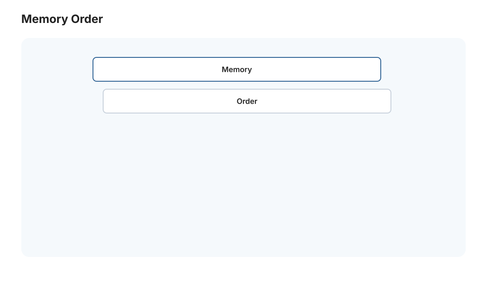

本页目录
并行 II · 同步原语与无锁结构
对标：CMU 15-418 / The Art of Multiprocessor Programming（Herlihy–Shavit）｜ 前置：par-01（缓存一致性、内存序）、os-02（锁） 并发的深水区。os-02 用锁保证正确，但锁有代价（争用、阻塞、死锁）。这一页讲无锁（lock-free）编程——用原子操作直接在共享数据上正确协作、不加锁。它是高性能并发（数据库、操作系统内核、并发容器）的核心，也是最容易写错的地方。理解它，你会真正明白 Rust（rust-02）"无畏并发"消灭的到底是什么。这对应 [实验 L10]。
学习层：CAS 看到的 A，真的是同一个 A 吗？
具体谜题：无锁栈的一次“成功”
栈顶初始为 \(A\)，其后是 \(B\)。线程 T1 读到 top=A 后暂停；T2 弹出 A、弹出 B、再把 A 压回去。T1 醒来时 CAS(A, C) 返回成功。它是否安全？如果指针旁边带一个版本号，序列 \(A_0\to B_1\to A_2\) 会发生什么？
先写出两条预测
预测：① 未标记指针会把“值仍为 A”误判成“状态未变”，可能读取已脱链或已回收的 next；② 带版本的 CAS 会因 \(A_2\ne A_0\) 失败并重试；③ relaxed 只保证原子性，不会自动把生产者写入的数据发布给消费者。
最小心智模型：线性化点 + 可见性 + 回收
一个无锁操作必须回答三个问题：哪个原子事件是它“瞬间生效”的线性化点？其他线程何时能看到此前写入？节点在什么条件下仍可被安全解引用？CAS 只直接回答第一个问题，acquire/release 和 hazard pointer/epoch reclamation 分别回答后两个。
形式机制与不变量
CAS 定义为 \(\mathrm{CAS}(x,e,n)\)：原子地检查 \(x=e\)，成立才写 \(n\)。正确的栈 push 要保持 \(new.next=old\_top\)，并让成功 CAS 成为线性化点。发布协议要求生产者先写 payload，再以 release 写 flag；消费者以 acquire 读到 flag 后才可读取 payload，这建立 happens-before。无锁只保证系统整体持续前进，不能保证每个线程在有限步内完成。
反例与失效边界
- 版本号会溢出；宽度不足或回收复用过快时仍需更严谨的 reclamation。
- 把所有原子改成 seq_cst 可能隐藏模型错误，但不能修复悬垂指针、错误的生命周期或 ABA 语义。
- 无锁不是无等待：一个线程可能饥饿，竞争激烈时 CAS 重试也可能比锁慢；能用成熟并发容器就不要手写。
迁移任务：把时间线交给 L10 与 Rust
先在纸上给 L10 的无锁栈画出 ABA 交错，再分别标出版本 CAS、hazard pointer 和 epoch 的保护点。把同一接口改写成 Rust 的 Arc、通道或受保护共享状态，指出 rust-02 的 Send/Sync 能消灭哪类错误，不能替你证明哪类算法不变量。
无 JavaScript 时的静态读法：初态为 top=A0。T1 读 A0；T2 执行 pop A、pop B、push A，得到 top=A2。未标记 CAS 只比较地址 A，会错误成功；标记 CAS 比较“地址+版本”，A0 与 A2 不同，失败后重读。发布例中若数据写入先于 release flag=1，消费者 acquire 读到 1 后才能安全读取；改成 relaxed 后原子计数仍正确，但可见性没有同样保证。
| 步骤 | 未标记 top | 版本化 top | 结论 |
|---|---|---|---|
| T1 读取 | A | A0 | 暂停 |
| T2 改三次 | A | A2 | ABA |
| T1 CAS | 成功但不安全 | 失败并重试 | 版本揭示变化 |
1. 原子操作：无锁的基石

原子操作：不可被打断的读-改-写，硬件保证（par-01 的缓存一致性 + 总线锁定实现）。核心是 CAS（Compare-And-Swap）：
CAS(地址, 期望值, 新值):
原子地 { 若 *地址 == 期望值 则 *地址 = 新值, 返回成功; 否则返回失败 }
Arc）全靠它。
无锁 vs 阻塞的哲学差异：锁是"我进临界区、你等着"；无锁是"大家都往前冲、冲突了就重试"——乐观并发。好处：没有线程能阻塞其他线程（一个线程崩在临界区不会卡死全体，锁做不到）、无死锁。代价：重试可能浪费、且极难写对。
2. 无锁栈与 ABA 问题

无锁栈的 push（CAS loop 范例）：
do {
old_top = top; // 读栈顶
new_node->next = old_top;
} while (!CAS(&top, old_top, new_node)); // 尝试把 top 换成新节点，失败重试
top = A，被挂起；期间别的线程把 A 弹出、又压入（top 变 B 又变回 A，但 A 可能已被释放或语义已变）；原线程醒来 CAS 发现 top 还是 A、误以为没变、成功写入——但世界已经不同了（A 指向的 next 可能已失效）。
ABA 的解法：① 带版本号的指针（每次改动版本 +1，CAS 连版本一起比——A 回来了但版本变了，CAS 失败）；② 危险指针 / epoch-based reclamation（安全的内存回收，确保没人还在用才释放）。ABA 是无锁编程最著名的坑，它教你："值相等不代表状态没变"——这个教训在分布式（dist-01 的时钟）里也有回声。
3. 内存序：最深的坑

par-01 说过 CPU 会重排内存操作。无锁代码里，一个线程写数据 + 写标志位，另一个线程读标志位 + 读数据——如果 CPU 重排了写的顺序，读线程可能看到"标志已置位但数据还没写好"。所以原子操作要带内存序（memory ordering）语义：
- relaxed：只保证原子性，不约束顺序——最快，仅用于计数器等无同步需求。
- acquire/release：release 写之前的所有写，对 acquire 读之后可见——这对配对建立"happens-before"，是无锁同步的主力（发布-订阅数据的正确姿势）。
- seq_cst（顺序一致）：全局单一顺序，最强最慢，最易推理——不确定时用它。
读法：内存序是"编译器和 CPU 允许怎么重排你的内存操作"的契约。这是并发最反直觉的部分——代码顺序 ≠ 执行顺序 ≠ 别的核看到的顺序。99% 的场景应该用锁或高层并发结构避开它；只有性能极致要求 + 你完全理解 acquire/release 时才手写无锁。
4. 高层并发结构:别自己造轮子
无锁难写对，所以实践中用久经考验的并发库：
- 并发容器：无锁队列（MPSC/MPMC）、并发哈希表（分段锁或无锁）、无锁环形缓冲区（生产者-消费者的高性能实现）。
- 读写锁 / RCU：读多写少时，RCU（Read-Copy-Update，Linux 内核大量使用）让读完全无锁无等待、写时复制新版本——极致读性能。
- 无等待（wait-free） 比无锁更强：保证每个操作有限步完成（无锁只保证系统整体前进、单个线程可能饿）——理论优雅但实现更难，少用。
方法论：并发编程的成熟度体现在"知道何时用锁、何时用无锁库、几乎永不手写无锁算法"。手写无锁是专家在特定热点才做的事，且必须配大量测试 + 形式化验证（这类 bug 靠测试极难复现，🔗 os-02 的间歇性）。
5. 通往 Rust:类型系统消灭并发 bug
回顾这两页的所有噩梦——数据竞争、ABA、内存序错误——它们的共同点是：编译器不知道哪些数据被哪些线程共享、以什么方式同步，全靠程序员小心。Rust 的洞见（rust-02 详讲）：把这些信息编码进类型系统——Send/Sync trait 标记"能否跨线程"、借用检查器保证"要么多个只读、要么一个可写"，于是数据竞争在编译期被拒绝。"无畏并发"不是魔法，是把本页的纪律变成编译器强制的规则——这是本站并行线与语言线的关键呼应，读完 rust-02 你会回看这两页豁然开朗。
6. 练习与要点
例 1（CAS loop 手写） 用 CAS 实现原子的"取最大值"（atomic_max）——读旧值、若新值更大则 CAS 写入、失败重试。CAS loop 的范式一次写会。
例 2（构造 ABA） 画出无锁栈在什么线程交错下触发 ABA——理解"A→B→A 骗过 CAS"，再想版本号如何修复。并发最经典的坑亲手推一遍。
例 3（内存序判断） 生产者写数据 + release 标志、消费者 acquire 标志 + 读数据——论证为什么这对 acquire/release 保证消费者看到完整数据，换成 relaxed 为什么可能出错。理解"配对的内存序建立可见性"。\(\blacksquare\)
▶ 实验 L10（无锁栈/队列）：
labs/L10-lockfree/—— CAS 实现无锁栈 + ABA 演示 + 内存序对比。跑在 Mac（C++/Rust）。这是并发深水区的动手练习，务必配 ThreadSanitizer 跑。
下一页：GPU I——CUDA 编程模型：从 CPU 的少数强核到 GPU 的数千弱核，大规模数据并行的硬件与思维。（本页起 CUDA 实验在你的 Win 4060 Ti 上跑。）